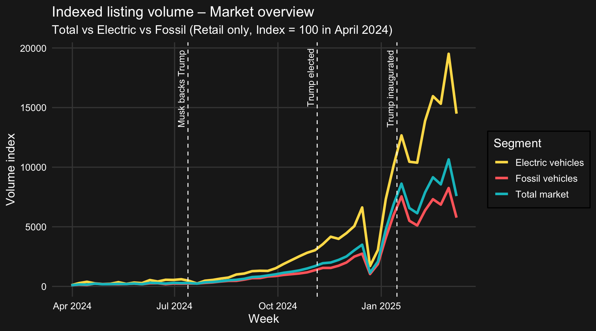
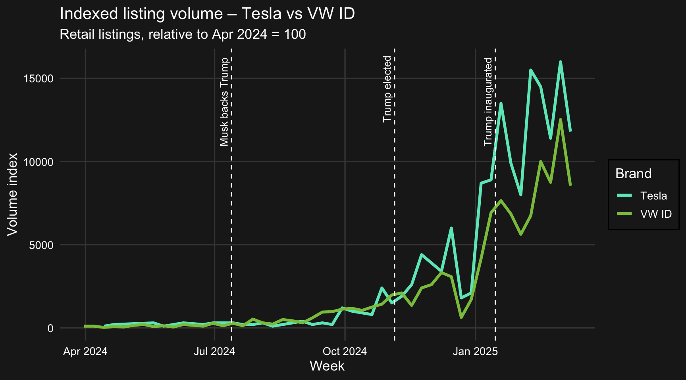
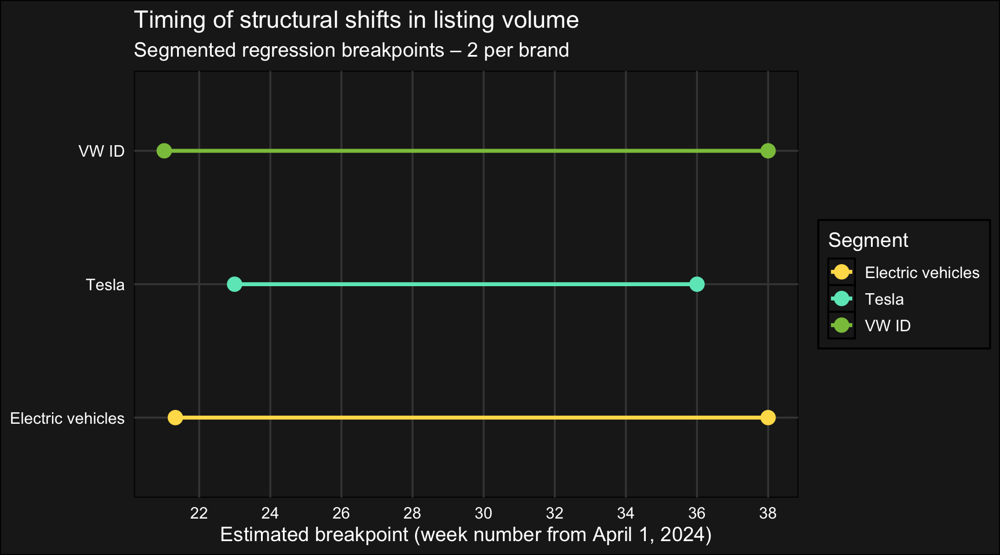
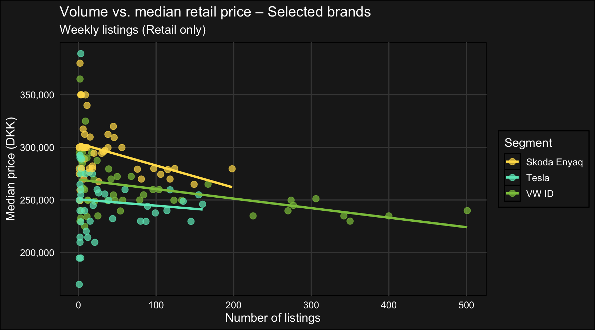
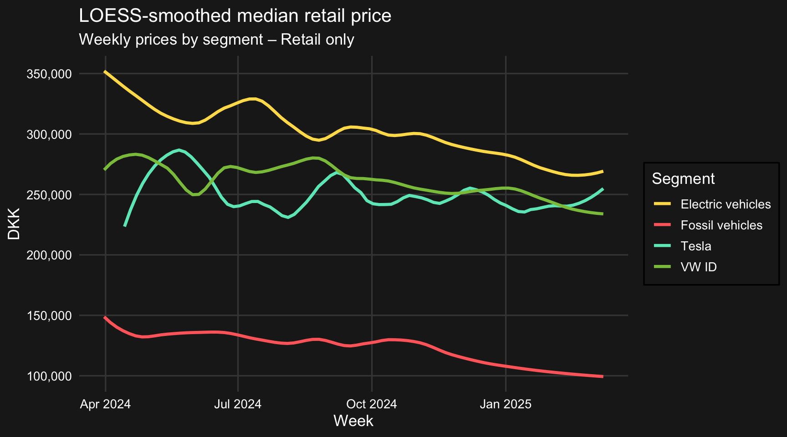
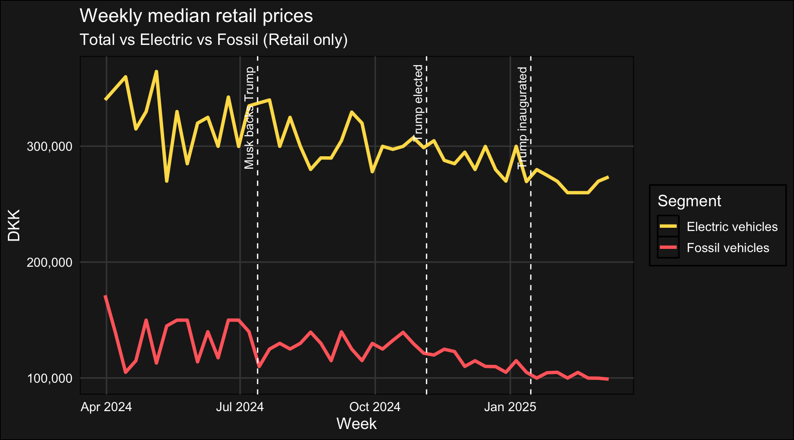
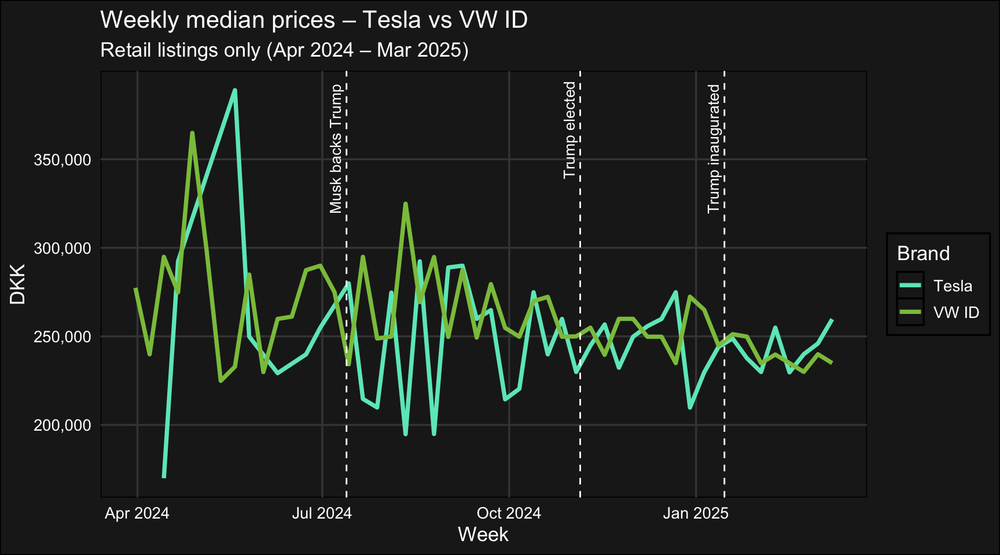
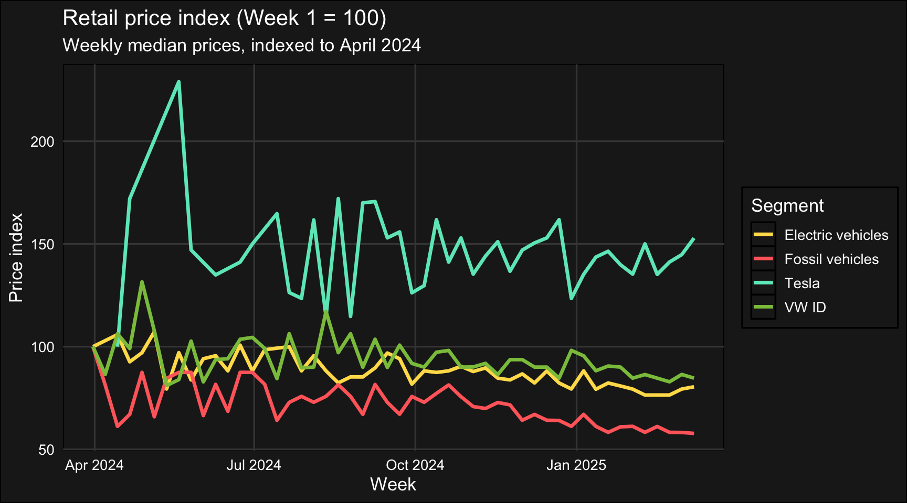
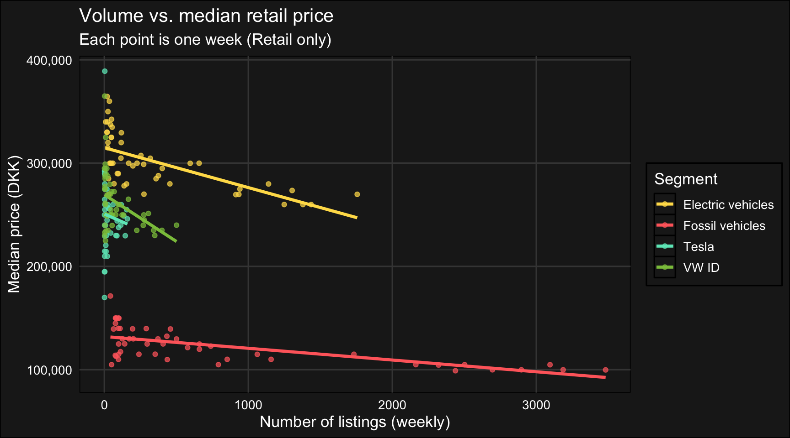

Tesla Trend Analysis – Used Car Market 2024–2025
Author
Wasteson x TrackSights
0.1 📋 Executive Summary
• Tesla diverged early. While most EV brands followed a gradual growth curve, Tesla entered and exited its surge phase earlier – suggesting a sharper, brand-specific trajectory. • Price sensitivity varies. Most segments showed textbook behavior: as listings increased, prices fell. Tesla, by contrast, remained price-stable – pointing to centralized pricing or brand insulation. • Timing overlaps with political signals. The most significant structural shifts in volume occurred around the same time as Musk’s Trump endorsement – not proof of causation, but enough to warrant further scrutiny. • Tesla breaks the model. Statistical models fit well for most segments, but Tesla’s higher residual error and flatter price–volume relationship point to episodic behavior and distinct market logic. • Implication: Watch Tesla. Real-time monitoring of brand-specific shifts could provide a competitive edge – especially when sentiment and leadership cues drive market volatility.
1 🯠Objective
Explore shifts in the Danish used car market during 2024–2025, with a focus on Tesla’s behavior in response to political signals – especially Elon Musk’s endorsement of Donald Trump.
The project uses a retrospective lens to illustrate how structural shifts can be surfaced early with the right data tooling. The key idea: timely insight is possible – but requires tracking and attention.
2 🧪 Setup
All required packages are loaded in the processing chunk below. No special configurations were needed for this analysis. The document runs entirely within a local R environment using Quarto.
3 📘 Synopsis
This analysis explores structural shifts in the Danish used car market during 2024–2025, with a specific focus on Tesla’s behavior relative to comparable brands. Our objective is twofold: to identify when significant changes in market volume occurred, and to assess whether Tesla responded differently to political signals – especially Elon Musk’s endorsement of Donald Trump.
Using weekly listing data from Bilbasen, we segmented the market by fuel type and brand, indexed volumes to a common baseline, and applied segmented regression to detect structural breakpoints in listing trends.
Tesla entered its surge phase slightly later (around week 23), but its second structural shift occurred earlier (week 36 vs. 38 for others). This indicates a faster transition through distinct growth phases – not a shorter growth period, but a more compressed and intense trajectory.
While we cannot directly attribute Tesla’s movements to political events, the brand clearly diverged from peer behavior – both in timing and intensity. The temporal overlap with high-profile endorsements may be coincidental, or it may point to brand-specific sensitivity to external signals – such as consumer sentiment or leadership cues.
Price data reinforce this difference: most segments saw declining prices as supply grew, but Tesla remained remarkably price-stable – hinting at a different dynamic at play. This divergence opens the door for deeper questions: Is it brand loyalty? Centralized pricing? Political sentiment? The pattern is visible – the mechanism, less so.
Overall, the analysis shows that structural changes were not only measurable – they were visible as they unfolded. Had this data been monitored in real time, a market actor could have:
– Identified the emerging shift before it peaked
– Reacted with smarter inventory or pricing moves
– Asked sharper questions while competitors were still catching up
In a market as volatile and sentiment-driven as used EVs, timely insight is not a luxury – it’s an edge.
4 🧪 Data Processing
This analysis is based on listing data from the Danish used car marketplace Bilbasen, extracted via TrackSights. The dataset spans from April 1, 2024, to March 14, 2025, and includes only retail listings.
We performed the following processing steps:
Date parsing and filtering Listings were filtered to include only those with a valid RetailPrice and dates within the analysis window.
Fuel type classification Cars were grouped into two fuel groups based on FuelType: • Electric • Fossil (all non-electric drivetrains)
Segment definition Based on brand and model, we created five analytical segments: Tesla (all models), VW ID (ID.3, ID.4, ID.5), Skoda Enyaq, electric vehicles, and fossil vehicles. In addition, a “Total market†segment was constructed for broader context.
Weekly aggregation Listings were grouped by week using floor_date(), and smoothed using rolling averages where relevant.
Indexing Volumes were normalized to an index (Week 1 = 100) per segment. This allows direct comparison of relative change over time.
Events overlay Key political events were added for context: • July 13, 2024 – Elon Musk publicly supports Donald Trump • November 5, 2024 – Trump wins the U.S. election • January 15, 2025 – Trump is inaugurated
5 📊 Results
5.1 📈 Market overview – Total vs Electric vs Fossil
The chart below shows the relative development in listing volume for fossil vehicles, electric vehicles, and the total used car market in Denmark – all indexed to April 2024 (week 1 = 100). A dramatic shift is visible from late summer 2024, with electric vehicles leading the surge.
Note on indexing: The following charts use indexed volumes (Week 1 = 100) to show relative changes over time. This means we are comparing growth patterns – not absolute volumes. For example, Tesla may appear to outpace the EV market, but this reflects faster growth from a smaller base, not a larger total volume.

Indexed listing volume: Total vs Fossil vs Electric (Retail only, Index = 100 in April 2024)
5.2 🔠Brand comparison – Tesla vs VW ID
Direct volume comparison between two comparable brands. Tesla displays more volatility and sharper surges, suggesting a faster transition once growth begins.

📈 Indexed listing volume: Tesla vs VW ID (Retail only, Index = 100 in April 2024)
When did volume behavior change?
We compare Tesla, VW ID, Skoda Enyaq, the total market, and broader EVs using segmented regression.
Both one- and two-breakpoint models were tested to assess structural shifts in listing volumes.
Findings
The one-breakpoint model suggested that Tesla shifted earlier than the rest – with a change around week 30, while other segments (VW ID, Enyaq, EVs, total market) shifted later, typically in week 38.
To test this further, we applied a two-breakpoint model to explore potential phase transitions:
Tesla entered its growth phase slightly after others (week 23)
But its second structural shift occurred earlier (week 36 vs. week 38 for peers)
Interpretation
Tesla’s volume curve was more compressed and sharper, suggesting a distinct growth pattern:
⚡ Not out of sync – but different. This supports the idea of brand-specific drivers, rather than a uniform EV market trend.
Segmented regression (2 breakpoints): Tesla, VW ID, Electric vehicles
Segment
Breakpoints
R²
Residual Std. Error
Tesla
23, 36
0.90
1700.16
VW ID
21, 38
0.93
887.77
Electric vehicles
21.3, 38
0.95
1187.67
Model interpretation: Tesla vs. peers
While all models exhibit a good fit (R² > 0.90), there are notable differences in residual error.
Tesla shows the lowest R² (0.90) and highest residual standard error (1700) compared to VW ID (R² = 0.93, RSE ≈ 888) and the broader EV segment (R² = 0.95, RSE ≈ 1188).
This suggests that Tesla’s volume curve is less well captured by a simple two-phase model, and likely reflects:
More episodic dynamics, potentially driven by brand-specific strategies
Outlier events or volatility not present in other EV segments
🧠Interpretation:
The higher residual variation reinforces the idea that Tesla’s structural shifts follow a more distinct and compressed pattern, which supports the argument for brand-specific timing mechanisms rather than a uniform EV market trend.
5.4 Timing of breakpoints in listing trends

Timing of structural shifts in listing volume – segmented regression breakpoints (2 per brand)
“Breakpoints show a more compressed transition for Tesla: it entered its growth phase slightly later, but exhibited an earlier structural shift in pattern. Peers (VW ID, EV market) followed a broader, more aligned trajectory across the period.”
6 💸 Price dynamics
How did prices respond to the volume shift?
This section investigates whether listing volumes and median retail prices moved in tandem – or diverged – across segments.
We apply three main analytical lenses in the main section:
Correlation analysis – do higher volumes coincide with lower prices?
Price–volume scatterplots – visualizing the relationship
This suggests that Tesla’s prices were less sensitive to changes in listing volume, diverging from other segments.
6.2 🔠Scatterplot – Volume vs median price for selected brands

Volume vs. median retail price – Selected brands (Tesla, VW ID, Skoda Enyaq)
Interpretation
This scatterplot shows the relationship between weekly listing volume (x-axis) and median retail price (y-axis) for three EV brands: Tesla, VW ID, and Skoda Enyaq. Each point represents one week; the trendlines show the direction and strength of that relationship for each brand. Two visual elements are key here:
Slope of the line → how prices respond to changes in volume
– A steeper negative slope means prices drop as listings rise (more price-sensitive).
– A flat line indicates prices remain stable regardless of supply.
Length of the line → the range of observed volumes
– A longer line means that the segment has been listed across a wider range of weekly volumes.
– A shorter line signals that the brand rarely reaches high volumes – so price behavior is only observed within a narrower supply band.
Findings
– VW ID combines a long line and a steep slope – indicating both high listing activity and strong price sensitivity.
– Skoda Enyaq has a shorter but steep line – fewer weeks with high volume, but still a clear price drop pattern.
– Tesla displays a flat and relatively short line – suggesting stable prices across a narrow volume range, reinforcing earlier signs of centralized pricing or limited responsiveness to weekly market conditions.
Together, these patterns reveal that volume alone doesn’t determine pricing power – the brand matters, and Tesla continues to diverge from peers in how it responds to market shifts.
6.3 📠Smoothed Price Trends (LOESS)

LOESS-smoothed price trends per segment
Interpretation
This chart shows smoothed weekly median prices using LOESS – a local regression technique that highlights broad trends while filtering out week-to-week noise.
Fossil vehicles display a steady decline, suggesting sustained price pressure across the period.
Electric vehicles show more fluctuation but a generally downward trend, indicating both volatility and emerging price normalization.
VW ID closely tracks the broader EV market, reinforcing its role as a representative subsegment.
Tesla stands out with elevated and relatively stable prices – despite some variation, the curve suggests resilience compared to peers.
In essence, this view highlights the structural separation in pricing levels between segments – with Tesla maintaining premium positioning.
6.4 🧠Final takeaway
While most segments followed textbook supply–demand logic (volume up → price down), Tesla defied the trend. Its prices remained elevated and stable, even as listings grew – signaling brand-specific dynamics, insulation, or deliberate pricing control.
Tesla doesn’t just behave differently – it moves on its own terms.
In short, the pattern is visible – and we’ve surfaced the shift.
7 📠Appendix
7.1 Weekly median retail prices

Weekly median retail prices – Total market, Fossil, and EV segments
Fossil vehicles held stable throughout the period, with only gradual decline – a hallmark of a mature, supply-stable segment. EV prices, by contrast, started high and trended downward. This supports the idea of market normalization: more listings, more competition, and an erosion of the early EV price premium.
7.2 Weekly median retail prices - Tesla vs VW ID

Weekly median prices – Tesla vs VW ID
Despite similar volumes, price dynamics diverge sharply. VW ID follows a modest and stable path. Tesla, meanwhile, swings unpredictably – suggesting sensitivity to external cues or internal recalibration. Volatility here may not signal chaos, but control: pricing used as an active lever.
7.3 📠Indexed Prices (Week 1 = 100)

Retail price index per segment (Week 1 = 100)
Indexing reveals a clearer narrative: Fossil and EV prices decline together, but Tesla defies the trend. Its price index remains elevated – fluctuating, but consistently above peers. This reinforces earlier points: Tesla isn’t just another EV brand, it moves to its own logic – structurally distinct in both volume and price.
7.4 Total markets volume vs. Price – Scatter

Scatterplot – Weekly volume vs median price (per segment)
This scatterplot quantifies what we’ve hinted at: volume correlates negatively with price across segments – except for Tesla. Where others follow the textbook rule (more listings = lower prices), Tesla’s line is nearly flat. It absorbs volume without discounting – or at least, without obvious market-based pressure.
Together, these charts reinforce the central pattern: Tesla doesn’t just behave differently – it prices differently, moves differently, and responds to change on its own terms. For market watchers, that makes it both harder to predict – and more important to watch.
Source Code
---title: "Tesla Trend Analysis – Used Car Market 2024–2025"author: "Wasteson x TrackSights"format: html: theme: darkly toc: true toc-title: "Table of Contents" number-sections: true code-fold: true code-tools: true fig-cap-location: bottom smooth-scroll: true link-external-newwindow: trueeditor: visualexecute: echo: false warning: false message: false---> ## 📋 Executive Summary>> **• Tesla diverged early.** While most EV brands followed a gradual growth curve, Tesla entered and exited its surge phase earlier – suggesting a sharper, brand-specific trajectory.\> **• Price sensitivity varies.** Most segments showed textbook behavior: as listings increased, prices fell. Tesla, by contrast, remained price-stable – pointing to centralized pricing or brand insulation.\> **• Timing overlaps with political signals.** The most significant structural shifts in volume occurred around the same time as Musk’s Trump endorsement – not proof of causation, but enough to warrant further scrutiny.\> **• Tesla breaks the model.** Statistical models fit well for most segments, but Tesla’s higher residual error and flatter price–volume relationship point to episodic behavior and distinct market logic.\> **• Implication: Watch Tesla.** Real-time monitoring of brand-specific shifts could provide a competitive edge – especially when sentiment and leadership cues drive market volatility.# 🯠ObjectiveExplore shifts in the Danish used car market during 2024–2025, with a focus on Tesla’s behavior in response to political signals – especially Elon Musk’s endorsement of Donald Trump.The project uses a retrospective lens to illustrate how structural shifts can be surfaced early with the right data tooling. The key idea: timely insight is possible – but requires tracking and attention.# 🧪 SetupAll required packages are loaded in the processing chunk below. No special configurations were needed for this analysis. The document runs entirely within a local R environment using Quarto.```{r}library(readxl)library(dplyr)library(lubridate)library(ggplot2)library(scales)library(tidyr)library(ggrepel)library(stringr)library(knitr)library(zoo)library(segmented)library(purrr)# Datay <-read_excel("~/Desktop/wasteson/TrackSights/data/bilbasen/trumpmusktesla/Bilbasen biler 1903 2024-kopi.xlsx")y <- y %>%mutate(date =dmy_hms(CreatedDate),month =floor_date(date, "month") )start_date <-as.Date("2024-04-01")end_date <-as.Date("2025-03-14")market_data <- y %>%filter(PriceType =="RetailPrice", date >= start_date & date <= end_date) %>%mutate(week =floor_date(date, "week"),fuel_group =case_when(str_to_lower(FuelType) %in%c("el", "electric") ~"Electric",TRUE~"Fossil" ),segment =case_when( make =="Tesla"~"Tesla", make =="VW"&str_detect(model, "^ID\\.") ~"VW ID", fuel_group =="Electric"~"Electric vehicles", fuel_group =="Fossil"~"Fossil vehicles",TRUE~"Other" ) )events <- tibble::tibble(label =c("Musk backs Trump", "Trump elected", "Trump inaugurated"),date =as.POSIXct(c("2024-07-13", "2024-11-05", "2025-01-15")))``````{r}# Filter data for relevant time period and prepare segment labelsstart_date <-as.Date("2024-04-01")end_date <-as.Date("2025-03-14")filtered_data <- y %>%filter(PriceType =="RetailPrice", date >= start_date & date <= end_date) %>%mutate(week =floor_date(date, "week"),fuel_group =case_when(str_to_lower(FuelType) %in%c("el", "electric") ~"Electric",TRUE~"Fossil" ),segment =case_when( make =="Tesla"~"Tesla", make =="VW"&str_detect(model, "^ID\\.") ~"VW ID", fuel_group =="Electric"~"Electric vehicles", fuel_group =="Fossil"~"Fossil vehicles",TRUE~"Other" ) )```# 📘 SynopsisThis analysis explores structural shifts in the Danish used car market during 2024–2025, with a specific focus on Tesla's behavior relative to comparable brands. Our objective is twofold: to identify when significant changes in market volume occurred, and to assess whether Tesla responded differently to political signals – especially Elon Musk’s endorsement of Donald Trump.Using weekly listing data from Bilbasen, we segmented the market by fuel type and brand, indexed volumes to a common baseline, and applied segmented regression to detect structural breakpoints in listing trends.Tesla entered its surge phase slightly later (around week 23), but its second structural shift occurred earlier (week 36 vs. 38 for others). This indicates a faster transition through distinct growth phases – not a shorter growth period, but a more compressed and intense trajectory.While we cannot directly attribute Tesla’s movements to political events, the brand clearly diverged from peer behavior – both in timing and intensity. The temporal overlap with high-profile endorsements may be coincidental, or it may point to brand-specific sensitivity to external signals – such as consumer sentiment or leadership cues.Price data reinforce this difference: most segments saw declining prices as supply grew, but Tesla remained remarkably price-stable – hinting at a different dynamic at play. This divergence opens the door for deeper questions: Is it brand loyalty? Centralized pricing? Political sentiment? The pattern is visible – the mechanism, less so.Overall, the analysis shows that structural changes were not only measurable – they were visible as they unfolded. Had this data been monitored in real time, a market actor could have:\– Identified the emerging shift before it peaked\– Reacted with smarter inventory or pricing moves\– Asked sharper questions while competitors were still catching upIn a market as volatile and sentiment-driven as used EVs, timely insight is not a luxury – it’s an edge.------------------------------------------------------------------------# 🧪 Data ProcessingThis analysis is based on listing data from the Danish used car marketplace Bilbasen, extracted via TrackSights. The dataset spans from April 1, 2024, to March 14, 2025, and includes only retail listings.We performed the following processing steps:Date parsing and filtering Listings were filtered to include only those with a valid RetailPrice and dates within the analysis window.Fuel type classification Cars were grouped into two fuel groups based on FuelType: • Electric • Fossil (all non-electric drivetrains)Segment definition Based on brand and model, we created five analytical segments: Tesla (all models), VW ID (ID.3, ID.4, ID.5), Skoda Enyaq, electric vehicles, and fossil vehicles. In addition, a “Total market†segment was constructed for broader context.Weekly aggregation Listings were grouped by week using floor_date(), and smoothed using rolling averages where relevant.Indexing Volumes were normalized to an index (Week 1 = 100) per segment. This allows direct comparison of relative change over time.Events overlay Key political events were added for context: • July 13, 2024 – Elon Musk publicly supports Donald Trump • November 5, 2024 – Trump wins the U.S. election • January 15, 2025 – Trump is inaugurated------------------------------------------------------------------------```{r data-processing, include=FALSE}# Packageslibrary(readxl)library(dplyr)library(lubridate)library(ggplot2)library(scales)library(tidyr)library(ggrepel)library(stringr)library(knitr)library(zoo)library(segmented)library(purrr)# Load datay <- read_excel("~/Desktop/wasteson/TrackSights/data/bilbasen/trumpmusktesla/Bilbasen biler 1903 2024-kopi.xlsx")# Parse and filter datesy <- y %>% mutate( date = dmy_hms(CreatedDate), month = floor_date(date, "month") )start_date <- as.Date("2024-04-01")end_date <- as.Date("2025-03-14")# Filter and segmentmarket_data <- y %>% filter(PriceType == "RetailPrice", date >= start_date & date <= end_date) %>% mutate( week = floor_date(date, "week"), fuel_group = case_when( str_to_lower(FuelType) %in% c("el", "electric") ~ "Electric", TRUE ~ "Fossil" ), segment = case_when( make == "Tesla" ~ "Tesla", make == "VW" & str_detect(model, "^ID\\.") ~ "VW ID", fuel_group == "Electric" ~ "Electric vehicles", fuel_group == "Fossil" ~ "Fossil vehicles", TRUE ~ "Other" ) )# Aggregate volumesvolume_by_segment <- market_data %>% filter(segment %in% c("Tesla", "VW ID", "Electric vehicles", "Fossil vehicles")) %>% count(week, segment)volume_total <- market_data %>% count(week) %>% mutate(segment = "Total market")# Combinevolume_all <- bind_rows(volume_by_segment, volume_total)# Index volumevolume_indexed <- volume_all %>% group_by(segment) %>% arrange(week) %>% mutate(index = (n / first(n)) * 100) %>% ungroup()# Event timelineevents <- tibble::tibble( label = c("Musk backs Trump", "Trump elected", "Trump inaugurated"), date = as.POSIXct(c("2024-07-13", "2024-11-05", "2025-01-15")))```# 📊 Results## 📈 Market overview – Total vs Electric vs FossilThe chart below shows the relative development in listing volume for fossil vehicles, electric vehicles, and the total used car market in Denmark – all indexed to April 2024 (week 1 = 100). A dramatic shift is visible from late summer 2024, with electric vehicles leading the surge.***Note on indexing**: The following charts use indexed volumes (Week 1 = 100) to show relative changes over time. This means we are comparing growth patterns – not absolute volumes. For example, Tesla may appear to outpace the EV market, but this reflects faster growth from a smaller base, not a larger total volume.*```{r}# Prepare volume_primary before plotting# Filter relevant segmentsvolume_segment <- filtered_data %>%filter(segment %in%c("Electric vehicles", "Fossil vehicles")) %>%count(week, segment)volume_total <- filtered_data %>%count(week) %>%mutate(segment ="Total market")# Combine and calculate indexvolume_primary <-bind_rows(volume_segment, volume_total) %>%group_by(segment) %>%arrange(week) %>%mutate(index = (n /first(n)) *100) %>%ungroup()``````{r}#| fig-width: 9#| fig-height: 5#| echo: false#| fig-cap: "Indexed listing volume: Total vs Fossil vs Electric (Retail only, Index = 100 in April 2024)"ggplot(volume_primary, aes(x = week, y = index, color = segment)) +geom_line(size =1.3) +geom_vline(data = events, aes(xintercept = date), linetype ="dashed", color ="white") +geom_text(data = events, aes(x = date, y =Inf, label = label),angle =90, vjust =-0.5, hjust =1.1,size =3.5, color ="white", inherit.aes =FALSE) +scale_color_manual(values =c("Total market"="#00c0c7","Electric vehicles"="#FFDD57","Fossil vehicles"="#FF6B6B" )) +labs(title ="Indexed listing volume – Market overview",subtitle ="Total vs Electric vs Fossil (Retail only, Index = 100 in April 2024)",x ="Week",y ="Volume index",color ="Segment" ) +theme_minimal(base_size =13) +theme(plot.background =element_rect(fill ="#1e1e1e", color =NA),panel.background =element_rect(fill ="#1e1e1e", color =NA),panel.grid.major =element_line(color ="#444444"),panel.grid.minor =element_blank(),text =element_text(color ="white"),axis.text =element_text(color ="white"),legend.background =element_rect(fill ="#1e1e1e"),legend.key =element_rect(fill ="#1e1e1e") )```## 🔠Brand comparison – Tesla vs VW IDDirect volume comparison between two comparable brands. Tesla displays more volatility and sharper surges, suggesting a faster transition once growth begins.```{r volume_tesla_vw, fig.width=9, fig.height=5, echo=FALSE, fig.cap="📈 Indexed listing volume: Tesla vs VW ID (Retail only, Index = 100 in April 2024)"}volume_focus <- filtered_data %>% filter(segment %in% c("Tesla", "VW ID")) %>% count(week, segment) %>% group_by(segment) %>% arrange(week) %>% mutate(index = (n / first(n)) * 100) %>% ungroup()ggplot(volume_focus, aes(x = week, y = index, color = segment)) + geom_line(size = 1.3) + geom_vline(data = events, aes(xintercept = date), linetype = "dashed", color = "white") + geom_text(data = events, aes(x = date, y = Inf, label = label), angle = 90, vjust = -0.5, hjust = 1.1, size = 3.5, color = "white", inherit.aes = FALSE) + scale_color_manual(values = c( "Tesla" = "#6BE7C2", "VW ID" = "#8BC34A" )) + labs( title = "Indexed listing volume – Tesla vs VW ID", subtitle = "Retail listings, relative to Apr 2024 = 100", x = "Week", y = "Volume index", color = "Brand" ) + theme_minimal(base_size = 13) + theme( plot.background = element_rect(fill = "#1e1e1e", color = NA), panel.background = element_rect(fill = "#1e1e1e", color = NA), panel.grid.major = element_line(color = "#444444"), panel.grid.minor = element_blank(), text = element_text(color = "white"), axis.text = element_text(color = "white"), legend.background = element_rect(fill = "#1e1e1e"), legend.key = element_rect(fill = "#1e1e1e") )```## 📠Structural breakpoints – Segmented regressionWhen did volume behavior change?\We compare Tesla, VW ID, Skoda Enyaq, the total market, and broader EVs using segmented regression.\Both one- and two-breakpoint models were tested to assess structural shifts in listing volumes.**Findings**\The one-breakpoint model suggested that Tesla shifted earlier than the rest – with a change around week 30, while other segments (VW ID, Enyaq, EVs, total market) shifted later, typically in week 38.To test this further, we applied a two-breakpoint model to explore potential phase transitions:- Tesla entered its growth phase slightly after others (week 23)\- But its second structural shift occurred earlier (week 36 vs. week 38 for peers)**Interpretation**\Tesla’s volume curve was more compressed and sharper, suggesting a distinct growth pattern:\⚡ Not out of sync – but different. This supports the idea of brand-specific drivers, rather than a uniform EV market trend.```{r load_packages, include=FALSE}library(dplyr)library(ggplot2)library(segmented)library(knitr)library(tibble)``````{r prepare_data}prepare_segment_data <- function(df, segment_label) { df %>% filter(segment == segment_label) %>% arrange(week) %>% mutate( week_num = as.numeric(difftime(week, min(week), units = "weeks")), index = (n / first(n)) * 100 )}tesla_data <- prepare_segment_data(volume_all, "Tesla")vwid_data <- prepare_segment_data(volume_all, "VW ID")ev_data <- prepare_segment_data(volume_all, "Electric vehicles")``````{r segmented_models}tesla_seg <- segmented(lm(index ~ week_num, data = tesla_data), seg.Z = ~week_num, psi = c(20, 35))vwid_seg <- segmented(lm(index ~ week_num, data = vwid_data), seg.Z = ~week_num, psi = c(20, 35))ev_seg <- segmented(lm(index ~ week_num, data = ev_data), seg.Z = ~week_num, psi = c(20, 36))``````{r breakpoint_table}compare_models_2breaks <- tibble( Segment = c("Tesla", "VW ID", "Electric vehicles"), Breakpoints = c( paste(round(tesla_seg$psi[, "Est."], 1), collapse = ", "), paste(round(vwid_seg$psi[, "Est."], 1), collapse = ", "), paste(round(ev_seg$psi[, "Est."], 1), collapse = ", ") ), `R²` = c( round(summary(tesla_seg)$r.squared, 2), round(summary(vwid_seg)$r.squared, 2), round(summary(ev_seg)$r.squared, 2) ), `Residual Std. Error` = c( round(summary(tesla_seg)$sigma, 2), round(summary(vwid_seg)$sigma, 2), round(summary(ev_seg)$sigma, 2) ))kable( compare_models_2breaks, caption = "Segmented regression (2 breakpoints): Tesla, VW ID, Electric vehicles", col.names = c("Segment", "Breakpoints", "R²", "Residual Std. Error"))```Model interpretation: Tesla vs. peersWhile all models exhibit a good fit (R² \> 0.90), there are notable differences in residual error.Tesla shows the **lowest R² (0.90)** and **highest residual standard error (1700)** compared to VW ID (R² = 0.93, RSE ≈ 888) and the broader EV segment (R² = 0.95, RSE ≈ 1188).This suggests that Tesla’s volume curve is **less well captured by a simple two-phase model**, and likely reflects:- **Sharper transitions** in listing behavior (e.g., price cuts, sudden demand surges)- **More episodic dynamics**, potentially driven by brand-specific strategies- **Outlier events** or volatility not present in other EV segments🧠*Interpretation:*\The higher residual variation reinforces the idea that Tesla’s structural shifts follow a **more distinct and compressed pattern**, which supports the argument for **brand-specific timing mechanisms** rather than a uniform EV market trend.## Timing of breakpoints in listing trends```{r breakpoint_plot, fig.cap="Timing of structural shifts in listing volume – segmented regression breakpoints (2 per brand)", fig.width=9, fig.height=5}breakpoint_df <- tibble( segment = c(rep("Tesla", 2), rep("VW ID", 2), rep("Electric vehicles", 2)), breakpoint = c( tesla_seg$psi[, "Est."], vwid_seg$psi[, "Est."], ev_seg$psi[, "Est."] ))ggplot(breakpoint_df, aes(x = breakpoint, y = segment, color = segment)) + geom_point(size = 4) + geom_line(aes(group = segment), linewidth = 1.2) + scale_color_manual(values = c( "Tesla" = "#6BE7C2", "VW ID" = "#8BC34A", "Electric vehicles" = "#FFDD57" )) + labs( title = "Timing of structural shifts in listing volume", subtitle = "Segmented regression breakpoints – 2 per brand", x = "Estimated breakpoint (week number from April 1, 2024)", y = NULL, color = "Segment" ) + scale_x_continuous(breaks = seq(20, 40, 2)) + theme_minimal(base_size = 13) + theme( plot.background = element_rect(fill = "#1e1e1e"), panel.background = element_rect(fill = "#1e1e1e"), panel.grid.major = element_line(color = "#444444"), panel.grid.minor = element_blank(), text = element_text(color = "white"), axis.text = element_text(color = "white"), legend.background = element_rect(fill = "#1e1e1e"), legend.key = element_rect(fill = "#1e1e1e") )```"Breakpoints show a more compressed transition for Tesla: it entered its growth phase slightly later, but exhibited an earlier structural shift in pattern. Peers (VW ID, EV market) followed a broader, more aligned trajectory across the period."# 💸 Price dynamicsHow did prices respond to the volume shift?This section investigates whether listing volumes and median retail prices moved in tandem – or diverged – across segments.We apply three main analytical lenses in the main section:1. **Correlation analysis** – do higher volumes coincide with lower prices?\2. **Price–volume scatterplots** – visualizing the relationship\3. **LOESS smoothing** – uncovering broader structural price trends📠*Supplementary figures are available in the Appendix.*------------------------------------------------------------------------```{r prepare_price_dynamics, include=FALSE}# 1. Medianpris for hele markedetprice_trend <- market_data %>% filter(segment %in% c("Total market", "Electric vehicles", "Fossil vehicles")) %>% filter(!is.na(Price), Price > 10000) %>% group_by(week, segment) %>% summarise(median_price = median(Price), .groups = "drop")# 2. Medianpris for Tesla og VW IDprice_focus_weekly <- market_data %>% filter(segment %in% c("Tesla", "VW ID"), !is.na(Price), Price > 10000) %>% group_by(week, segment) %>% summarise(median_price = median(Price), .groups = "drop")# 3. Volum vs pris per ukevol_vs_price <- market_data %>% filter(segment %in% c("Tesla", "VW ID", "Electric vehicles", "Fossil vehicles")) %>% filter(!is.na(Price), Price > 10000) %>% group_by(segment, week) %>% summarise( n = n(), median_price = median(Price), .groups = "drop" )# 4. Prisindeks (index = 100)price_index <- market_data %>% filter(segment %in% c("Tesla", "VW ID", "Electric vehicles", "Fossil vehicles")) %>% filter(!is.na(Price), Price > 10000) %>% group_by(segment, week) %>% summarise(median_price = median(Price), .groups = "drop") %>% group_by(segment) %>% arrange(week) %>% mutate(price_index = (median_price / first(median_price)) * 100) %>% ungroup()# 5. LOESS-dataprice_loess <- market_data %>% filter(segment %in% c("Tesla", "VW ID", "Electric vehicles", "Fossil vehicles")) %>% filter(!is.na(Price), Price > 10000) %>% group_by(week, segment) %>% summarise(median_price = median(Price), .groups = "drop")# 6. Korrelasjonsanalyseget_correlation <- function(seg) { df <- filtered_data %>% filter(segment == seg, Price >= 10000) %>% mutate(week = floor_date(date, "week")) %>% group_by(week) %>% summarise( volume = n(), median_price = median(Price), .groups = "drop" ) if (nrow(df) < 5) return(NULL) test <- cor.test(df$volume, df$median_price) tibble( Segment = seg, correlation = test$estimate, p_value = test$p.value )}segments_to_analyze <- c("Tesla", "VW ID", "Electric vehicles", "Fossil vehicles")correlation_results <- purrr::map_dfr(segments_to_analyze, get_correlation)```## 📊 Correlation: Price vs. Volume```{r price_correlation}correlation_results %>% knitr::kable( caption = "Correlation between weekly listing volume and median retail price", digits = 3, col.names = c("Segment", "Pearson correlation", "P-value") )```**Interpretation**- 📉 **Fossil vehicles and EVs**: strong negative correlation → more listings = lower prices\- 📉 **VW ID**: moderate but significant correlation\- ■**Tesla**: nearly flat, non-significant relationship (r = –0.085, p = 0.595)This suggests that **Tesla’s prices were less sensitive to changes in listing volume**, diverging from other segments.------------------------------------------------------------------------------------------------------------------------------------------------## 🔠Scatterplot – Volume vs median price for selected brands```{r price_volume_selected_brands, fig.width=9, fig.height=5, fig.cap="Volume vs. median retail price – Selected brands (Tesla, VW ID, Skoda Enyaq)"}scatter_brands <- filtered_data %>% filter(segment %in% c("Tesla", "VW ID") | (make == "Skoda" & model == "Enyaq")) %>% mutate(segment = case_when( make == "Skoda" & model == "Enyaq" ~ "Skoda Enyaq", TRUE ~ segment )) %>% group_by(week, segment) %>% summarise( volume = n(), median_price = median(Price, na.rm = TRUE), .groups = "drop" )ggplot(scatter_brands, aes(x = volume, y = median_price, color = segment)) + geom_point(alpha = 0.7, size = 3) + geom_smooth(method = "lm", se = FALSE, size = 1.2) + scale_color_manual(values = c( "Tesla" = "#6BE7C2", "VW ID" = "#8BC34A", "Skoda Enyaq" = "#FFDD57" )) + labs( title = "Volume vs. median retail price – Selected brands", subtitle = "Weekly listings (Retail only)", x = "Number of listings", y = "Median price (DKK)", color = "Segment" ) + scale_y_continuous(labels = scales::comma) + theme_minimal(base_size = 13) + theme( plot.background = element_rect(fill = "#1e1e1e"), panel.background = element_rect(fill = "#1e1e1e"), panel.grid.major = element_line(color = "#444444"), panel.grid.minor = element_blank(), text = element_text(color = "white"), axis.text = element_text(color = "white"), legend.background = element_rect(fill = "#1e1e1e"), legend.key = element_rect(fill = "#1e1e1e") )```**Interpretation**\This scatterplot shows the relationship between **weekly listing volume** (x-axis) and **median retail price** (y-axis) for three EV brands: **Tesla**, **VW ID**, and **Skoda Enyaq**. Each point represents one week; the trendlines show the direction and strength of that relationship for each brand. Two visual elements are key here:**Slope of the line** → how prices respond to changes in volume\– A **steeper negative slope** means prices drop as listings rise (more price-sensitive).\– A **flat line** indicates prices remain stable regardless of supply.**Length of the line** → the range of observed volumes\– A **longer line** means that the segment has been listed across a wider range of weekly volumes.\– A **shorter line** signals that the brand rarely reaches high volumes – so price behavior is only observed within a narrower supply band.**Findings**\– **VW ID** combines a long line and a steep slope – indicating both high listing activity and strong price sensitivity.\– **Skoda Enyaq** has a shorter but steep line – fewer weeks with high volume, but still a clear price drop pattern.\– **Tesla** displays a flat and relatively short line – suggesting stable prices across a narrow volume range, reinforcing earlier signs of centralized pricing or limited responsiveness to weekly market conditions.Together, these patterns reveal that **volume alone doesn't determine pricing power** – the brand matters, and Tesla continues to diverge from peers in how it responds to market shifts.------------------------------------------------------------------------------------------------------------------------------------------------## 📠Smoothed Price Trends (LOESS)```{r loess_price_trend, fig.width=9, fig.height=5, fig.cap="LOESS-smoothed price trends per segment"}ggplot(price_loess, aes(x = week, y = median_price, color = segment)) + geom_smooth(method = "loess", span = 0.3, se = FALSE, size = 1.2) + labs( title = "LOESS-smoothed median retail price", subtitle = "Weekly prices by segment – Retail only", x = "Week", y = "DKK", color = "Segment" ) + scale_color_manual(values = c( "Tesla" = "#6BE7C2", "VW ID" = "#8BC34A", "Electric vehicles" = "#FFDD57", "Fossil vehicles" = "#FF6B6B" )) + scale_y_continuous(labels = scales::comma) + theme_minimal(base_size = 13) + theme( plot.background = element_rect(fill = "#1e1e1e", color = NA), panel.background = element_rect(fill = "#1e1e1e", color = NA), panel.grid.major = element_line(color = "#444444"), panel.grid.minor = element_blank(), text = element_text(color = "white"), axis.text = element_text(color = "white"), legend.background = element_rect(fill = "#1e1e1e"), legend.key = element_rect(fill = "#1e1e1e") )```**Interpretation**\This chart shows smoothed weekly median prices using LOESS – a local regression technique that highlights broad trends while filtering out week-to-week noise.- **Fossil vehicles** display a steady decline, suggesting sustained price pressure across the period.\- **Electric vehicles** show more fluctuation but a generally downward trend, indicating both volatility and emerging price normalization.\- **VW ID** closely tracks the broader EV market, reinforcing its role as a representative subsegment.\- **Tesla** stands out with elevated and relatively stable prices – despite some variation, the curve suggests resilience compared to peers.In essence, this view highlights **the structural separation in pricing levels** between segments – with Tesla maintaining premium positioning.------------------------------------------------------------------------## 🧠**Final takeaway**While most segments followed textbook supply–demand logic (volume up → price down), Tesla defied the trend. Its prices remained elevated and stable, even as listings grew – signaling brand-specific dynamics, insulation, or deliberate pricing control.Tesla doesn’t just behave differently – it moves on its own terms.**In short, the pattern is visible – and we’ve surfaced the shift.**------------------------------------------------------------------------# 📠Appendix## Weekly median retail prices```{r price_median_all, fig.width=9, fig.height=5, fig.cap="Weekly median retail prices – Total market, Fossil, and EV segments"}ggplot(price_trend, aes(x = week, y = median_price, color = segment)) + geom_line(size = 1.3) + geom_vline(data = events, aes(xintercept = date), linetype = "dashed", color = "white") + geom_text(data = events, aes(x = date, y = Inf, label = label), angle = 90, vjust = -0.5, hjust = 1.1, size = 3.5, color = "white", inherit.aes = FALSE) + scale_y_continuous(labels = scales::comma) + scale_color_manual(values = c( "Total market" = "#00c0c7", "Electric vehicles" = "#FFDD57", "Fossil vehicles" = "#FF6B6B" )) + labs( title = "Weekly median retail prices", subtitle = "Total vs Electric vs Fossil (Retail only)", x = "Week", y = "DKK", color = "Segment" ) + theme_minimal(base_size = 13) + theme( plot.background = element_rect(fill = "#1e1e1e"), panel.background = element_rect(fill = "#1e1e1e"), panel.grid.major = element_line(color = "#444444"), panel.grid.minor = element_blank(), text = element_text(color = "white"), axis.text = element_text(color = "white"), legend.background = element_rect(fill = "#1e1e1e"), legend.key = element_rect(fill = "#1e1e1e") )```Fossil vehicles held stable throughout the period, with only gradual decline – a hallmark of a mature, supply-stable segment. EV prices, by contrast, started high and trended downward. This supports the idea of market normalization: more listings, more competition, and an erosion of the early EV price premium.## Weekly median retail prices - Tesla vs VW ID```{r price_median_tesla_vw, fig.width=9, fig.height=5, fig.cap="Weekly median prices – Tesla vs VW ID"}ggplot(price_focus_weekly, aes(x = week, y = median_price, color = segment)) + geom_line(size = 1.3) + geom_vline(data = events, aes(xintercept = date), linetype = "dashed", color = "white") + geom_text(data = events, aes(x = date, y = Inf, label = label), angle = 90, vjust = -0.5, hjust = 1.1, size = 3.5, color = "white", inherit.aes = FALSE) + scale_y_continuous(labels = scales::comma) + scale_color_manual(values = c( "Tesla" = "#6BE7C2", "VW ID" = "#8BC34A" )) + labs( title = "Weekly median prices – Tesla vs VW ID", subtitle = "Retail listings only (Apr 2024 – Mar 2025)", x = "Week", y = "DKK", color = "Brand" ) + theme_minimal(base_size = 13) + theme( plot.background = element_rect(fill = "#1e1e1e"), panel.background = element_rect(fill = "#1e1e1e"), panel.grid.major = element_line(color = "#444444"), panel.grid.minor = element_blank(), text = element_text(color = "white"), axis.text = element_text(color = "white"), legend.background = element_rect(fill = "#1e1e1e"), legend.key = element_rect(fill = "#1e1e1e") )```Despite similar volumes, price dynamics diverge sharply. VW ID follows a modest and stable path. Tesla, meanwhile, swings unpredictably – suggesting sensitivity to external cues or internal recalibration. Volatility here may not signal chaos, but control: pricing used as an active lever.## 📠Indexed Prices (Week 1 = 100)```{r price_index_plot, fig.width=9, fig.height=5, fig.cap="Retail price index per segment (Week 1 = 100)"}ggplot(price_index, aes(x = week, y = price_index, color = segment)) + geom_line(size = 1.2) + labs( title = "Retail price index (Week 1 = 100)", subtitle = "Weekly median prices, indexed to April 2024", x = "Week", y = "Price index", color = "Segment" ) + scale_color_manual(values = c( "Tesla" = "#6BE7C2", "VW ID" = "#8BC34A", "Electric vehicles" = "#FFDD57", "Fossil vehicles" = "#FF6B6B" )) + theme_minimal(base_size = 13) + theme( plot.background = element_rect(fill = "#1e1e1e"), panel.background = element_rect(fill = "#1e1e1e"), panel.grid.major = element_line(color = "#444444"), panel.grid.minor = element_blank(), text = element_text(color = "white"), axis.text = element_text(color = "white"), legend.background = element_rect(fill = "#1e1e1e"), legend.key = element_rect(fill = "#1e1e1e") )```Indexing reveals a clearer narrative: Fossil and EV prices decline together, but Tesla defies the trend. Its price index remains elevated – fluctuating, but consistently above peers. This reinforces earlier points: Tesla isn't just another EV brand, it moves to its own logic – structurally distinct in both volume and price.## Total markets volume vs. Price – Scatter```{r price_volume_scatter, fig.width=9, fig.height=5, fig.cap="Scatterplot – Weekly volume vs median price (per segment)"}ggplot(vol_vs_price, aes(x = n, y = median_price, color = segment)) + geom_point(alpha = 0.7) + geom_smooth(method = "lm", se = FALSE, size = 1.2) + labs( title = "Volume vs. median retail price", subtitle = "Each point is one week (Retail only)", x = "Number of listings (weekly)", y = "Median price (DKK)", color = "Segment" ) + scale_color_manual(values = c( "Tesla" = "#6BE7C2", "VW ID" = "#8BC34A", "Electric vehicles" = "#FFDD57", "Fossil vehicles" = "#FF6B6B" )) + scale_y_continuous(labels = scales::comma) + theme_minimal(base_size = 13) + theme( plot.background = element_rect(fill = "#1e1e1e"), panel.background = element_rect(fill = "#1e1e1e"), panel.grid.major = element_line(color = "#444444"), panel.grid.minor = element_blank(), text = element_text(color = "white"), axis.text = element_text(color = "white"), legend.background = element_rect(fill = "#1e1e1e"), legend.key = element_rect(fill = "#1e1e1e") )```This scatterplot quantifies what we’ve hinted at: volume correlates negatively with price across segments – except for Tesla. Where others follow the textbook rule (more listings = lower prices), Tesla’s line is nearly flat. It absorbs volume without discounting – or at least, without obvious market-based pressure.Together, these charts reinforce the central pattern: Tesla doesn’t just behave differently – it prices differently, moves differently, and responds to change on its own terms. For market watchers, that makes it both harder to predict – and more important to watch.\